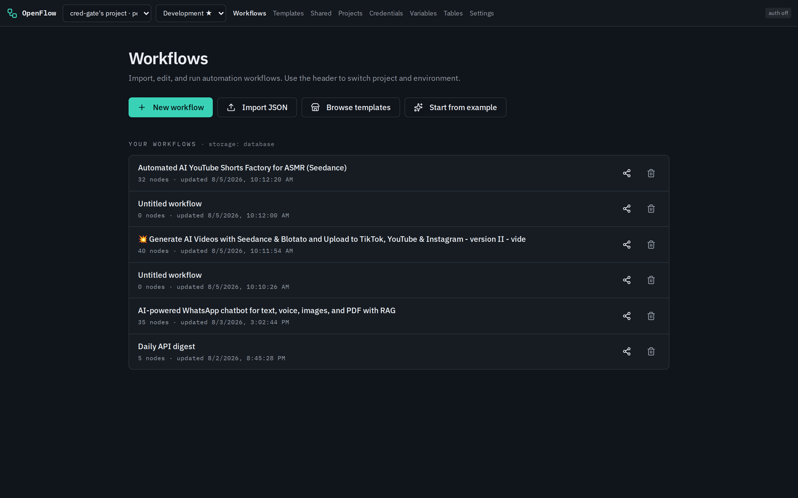
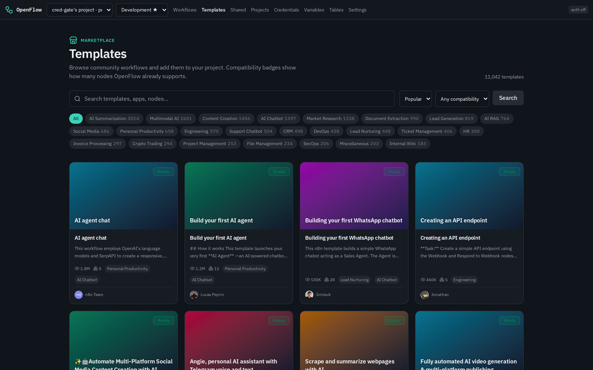

Visual workflow editor
Canvas-first UI powered by React Flow. Drag nodes, wire branches, inspect data, and iterate without leaving the browser.
Open source · Self-hosted
OpenFlow is a self-hosted engine and visual editor for building automations. Import familiar workflow JSON, run nodes you control, and deploy with Docker — no cloud lock-in.

Workflow library, template marketplace, and a canvas that feels built for operators — not demos.



A full product surface — editor, engine, credentials, and workers — designed to stay under your control.
Canvas-first UI powered by React Flow. Drag nodes, wire branches, inspect data, and iterate without leaving the browser.
Targets the publicly documented workflow format and expression style so exports can be opened, edited, and saved. Independent implementation — not a fork of any proprietary source tree.
Encrypted credentials, environments, variables, and secret providers so production secrets stay out of your graph definitions.
Hono API, Postgres via Prisma, and BullMQ on Redis for durable runs — the pieces you need for real self-hosted workloads.
Author nodes with a stable TypeScript surface:
defineNode, execution context, and helpers — the only
supported path for builtins and future plugins.
Projects, sharing, RBAC, data tables, and a template marketplace path so teams can reuse patterns instead of rebuilding every flow.
OpenFlow is a single deployable stack: a React editor for humans, a graph engine for nodes, and Postgres + Redis for state and jobs.
Build workflows from triggers and actions. Configure parameters with expressions, pick credentials, and organize work into projects.
The runtime walks the graph, evaluates expressions, passes items between nodes, and records execution history you can inspect in the UI.
Docker Compose brings up API, worker, Postgres, and Redis. Point TLS at the API and you are in production-shaped territory.
OpenFlow grows coverage without copying third-party source. Public docs become specs; specs become SDK nodes — with isolation and validation at every stage.
Early on, the project rejected a managed-cloud-only backend. Workflow execution needs long-running workers, persistent state, and control over the sandbox — so OpenFlow ships as a self-hosted app: TypeScript end to end, Hono for the API, Prisma for Postgres, BullMQ for the queue.
Node coverage is the hard problem. Instead of vendoring someone else’s codebase, OpenFlow uses a clean-room factory: agents read public documentation and write behavioral specs; a separate implement path is allowed to see only those specs and the OpenFlow Plugin SDK — never third-party source trees.
Temporary corpus used for speccing lives outside the git tree and is wiped after the SPEC stage. Implement and validate gates keep the repo free of forbidden material. The result is hundreds of specs and executors grown at scale, with AI in the loop and human-owned process rules.
Public docs → behavioral markdown under docs/specs/nodes/
No third-party packs remain in the factory run tree
Spec + SDK only → executor, tests, registry registration
Gates and checks; fail cycles back to SPEC when needed
Independent open-source project under the real-limitless GitHub account.
Creator · @real-limitless
Building OpenFlow as a self-hosted automation platform with a clean-room node factory — so ownership of the runtime and the process stays with the people running it.
Only Docker is required for the recommended path. No manual database setup.
# clone and start
git clone https://github.com/real-limitless/OpenFlow.git
cd OpenFlow
docker compose up -d
# open the app
# → http://localhost:3000
Need Node.js 22+ and Docker for Postgres + Redis. Then:
npm run setup and npm run dev.